Scene 1Warm-Up
▶ Start hereHow your Wonder Films lessons work1-minute videoOpen ▾
🎯 TodayI can…
- describe what criteria and constraints mean in engineering.
- design a simple solution to protect a Florida habitat.
- explain my design and say what I'd improve.

🔎 Mystery specimenPretty plant, or problem?
What to do: Press Inspect specimen. Move the magnifying lens over the branch, then tap 3 things you notice.
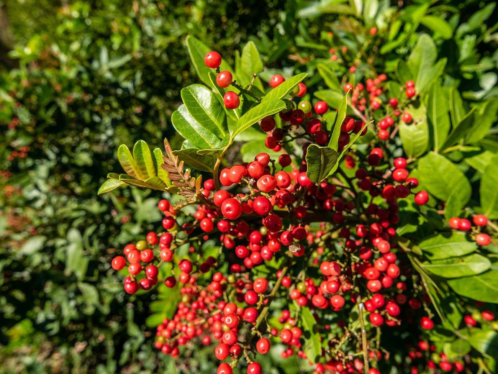
📚 Word WallWords scientists use
What to do: Tap or click each card to flip it and read what the word means.
Scene 2The Lesson
🌿 Part 1From Problem to Solution
In the last lesson, you found three big threats to Florida's ecosystems: pollution, invasive species, and habitat loss. People caused many of these problems, and people are now designing solutions. That's what engineers do. They ask a question about a real problem, investigate what is causing it, and design something to help. Then they test it to see if it works.
🎞️ Put the scenes in orderHow do engineers solve a problem?
What to do: Drag each photo into the film strip, from first to last. You can also tap a photo, then tap a frame. Get the order right and your strip becomes a movie.
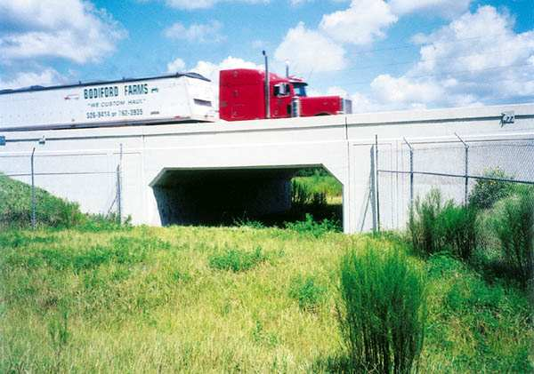
Max says, "Engineers just start building. Planning wastes time." What do you think?
⚙️ Part 2The Engineering Design Process
Engineers follow five steps: define the problem, research, design, test, and improve. Before they build anything, they list the criteria (what the design must do) and the constraints (limits like cost, size, and materials). Skipping a step usually means the design fails, so good engineers take their time and check their work at every step.
🧪 The Tunnel TestWhich crossing fits which animal?
What to do: Follow the steps one at a time. You will pick, test, and then explain.
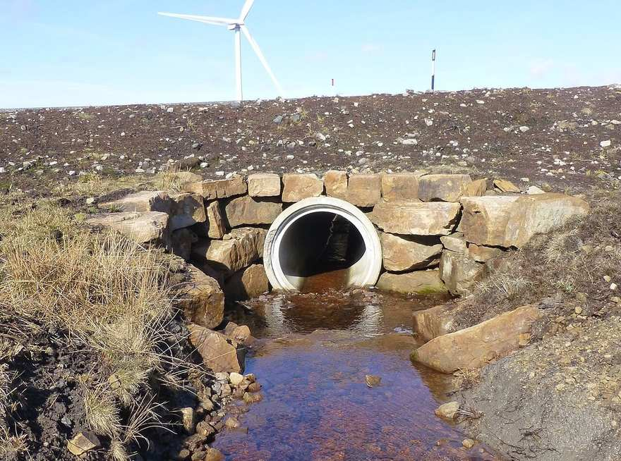

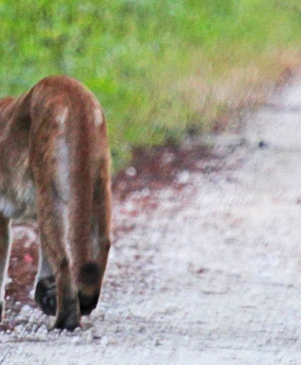
A panther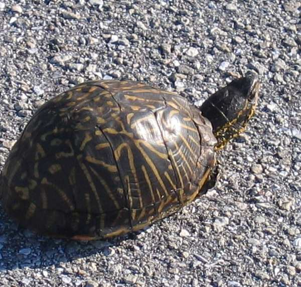
A box turtle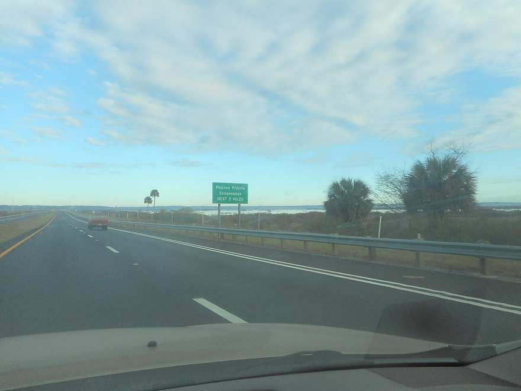
🏗️ Part 3Real Engineers, Real Florida
In the early 1990s, engineers built 24 wildlife crossings and changed 12 bridges along 40 miles of I-75, with tall fences that guide animals to them. To check their work, scientists collect evidence: observations from trail cameras and counts of animals hit by cars.
In the 1970s, only about 20 to 30 panthers were left. Today, scientists estimate about 120 to 230 adults. Crossings are one of several things helping them.
🗺️ Florida FixesVisit four real projects, one stop at a time
What to do: First, make a prediction. Then brush the glowing stop: drag across it (or tap it again and again) until the photo shows.
Do you predict all four projects were built to do the same job?
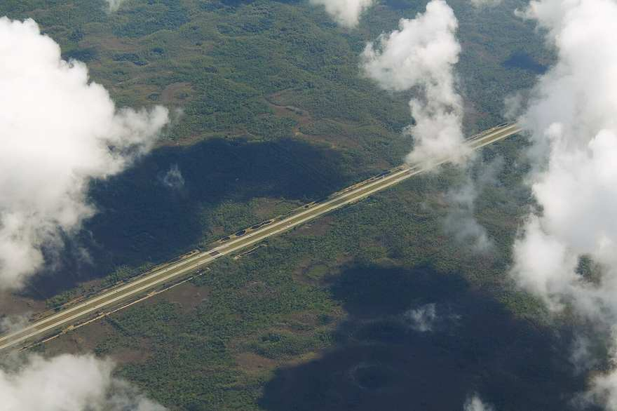
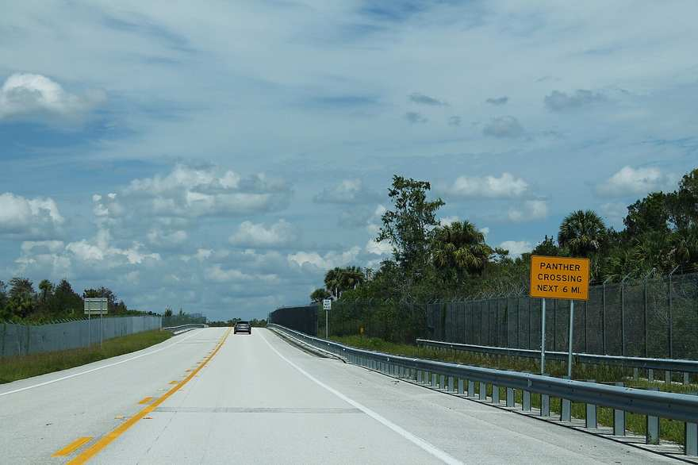
Stop 1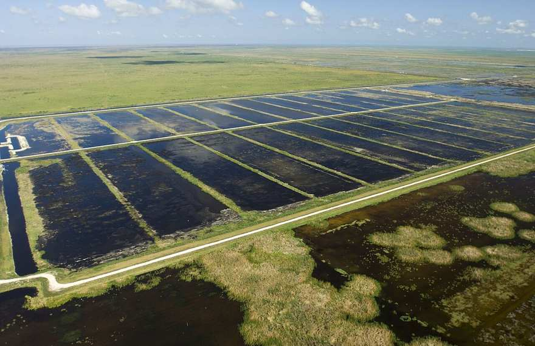
Stop 2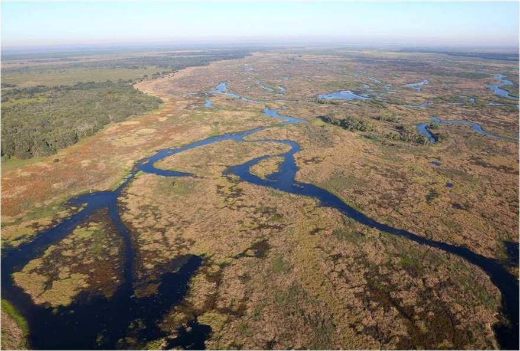
Stop 3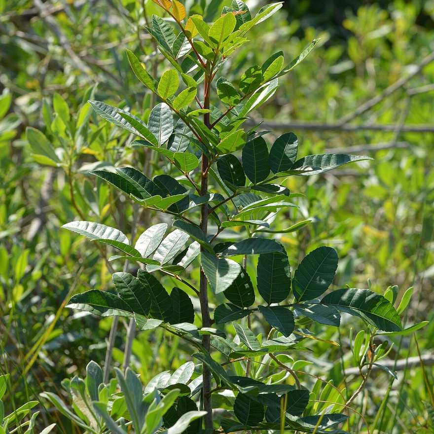
Stop 4Criteria first. Engineers decide what a design must do before they build it. A road crossing, a water filter, a river repair, and a plant cleanup each have their own criteria.
Leo says, "Engineers can use the same tunnel design for every animal." What do you think?
A River Put Back
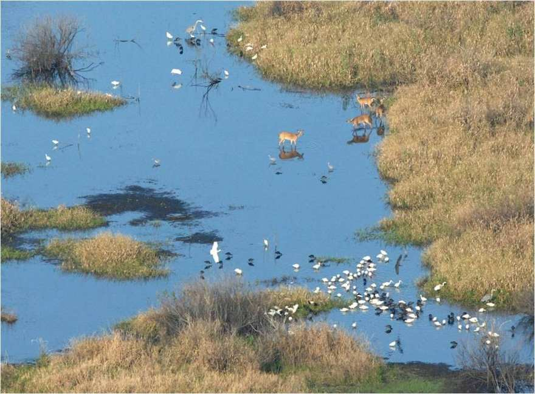
Engineers once straightened the Kissimmee River into a canal. The wetlands beside it dried up, and many birds left.
Now engineers have filled parts of the canal, and water flows through the old curves again. Wading birds and fish are coming back.
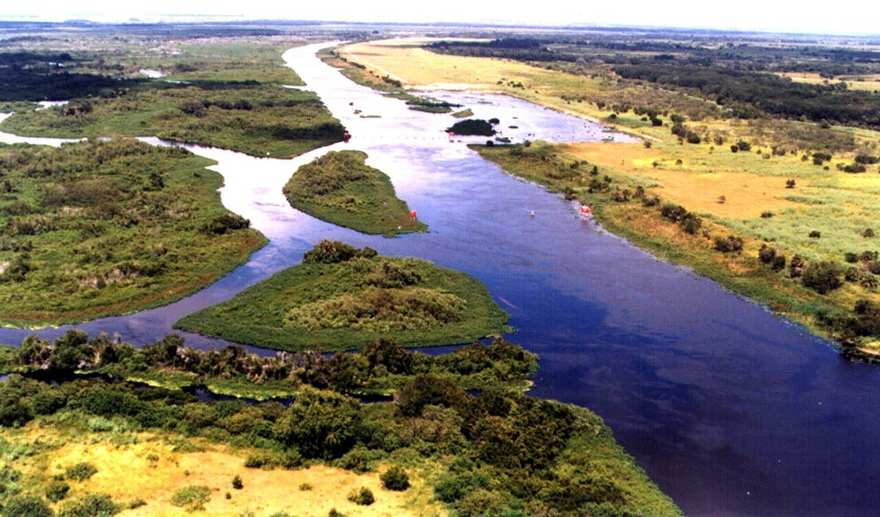
🕵️ Part 4Design Files
What to do: Pick 3 cards, one at a time. Tap the fact that is a constraint (a limit), then name what the design must do. Predict how it turned out, and see the evidence.
| Card | The constraint | What it must do | How it turned out | My explanation |
|---|
🗂️ Sort the projectsUse your evidence to sort the projects OPTIONALOpen ▾
What to do: Pick one you solved. Pick the place it points to, then pick the living things that belong there.
Pick one from your chart and explain it.
Start with: "Card __ had the constraint…"
Scene 3Self-Check
What does "criteria" mean in engineering design?
An engineer designing a water filter must use only natural materials and spend under $20. What does "natural materials and under $20" describe?
An engineer tests her wildlife underpass and discovers animals won't use it. What should she do next?
Scene 4Assignment
🔍 Part AMatch the terms
What to do: Read each one. Pick the engineering word it describes.
1. A test version of a design, built to see what works and what needs to change.
2. The work of bringing a damaged ecosystem back to a healthier state.
3. The features a solution must have to be considered successful.
4. A limit on your design, like cost, size, or what materials you're allowed to use.
5. A path that connects two wild areas so animals can travel safely between them.
🚀 Part BShort answer
What to do: Pick one challenge: A. Clean the Water (farm runoff is turning a lake green), B. Safe Passage (panthers are hit crossing a highway), or C. Stop the Spread (Brazilian pepper is taking over a preserve). Answer in complete sentences.
1. Name one criteria and one constraint for your challenge. How did the constraint change your design?
2. What is one thing about your design you'd improve if you could test it? What would you change?
✍️ Write and explainWhat did you learn about engineering from designing your habitat solution?
What to do: Answer the three questions. Use at least two of the science words under the boxes.
Start with: "When I was designing my solution, I noticed…"
Start with: "That showed me that engineering is…"
Start with: "I think it matters because…"
🎨 Part CDraw and label
What to do: Draw your design for the challenge you picked in Part B. Label at least 5 parts: the threat, your solution, at least one native plant or animal that benefits, and two more parts of your design.
🎬 Your question from Scene 1Can you answer it now?
What do you still wonder about? Write your question here. Then answer it.
📋 My answersEverything you wrote, in one place
(Your answers show up here as you write.)
How to turn in: Copy your answers and paste them into the Canvas assignment. Or download the file and upload it. Then press Save my drawing in Part C and upload your drawing too.
✅ Checklist
What to do: Tap each item when it is done. Items you finish on the page check themselves.
- My evidence chart has 3 design files and my explanation.
- Part A: all five matched.
- Part B: questions 1 and 2.
- Part C: my design sketch and all my labels.
- Write and explain, with at least two science words.
🎬 Premiere my engineering storyYour exhibit
What to do: Check your exhibit. Pick the one you wrote about, add your first name, then press Premiere film.
I observed…
Its job…
My evidence…
It tells us…
🎞️ This film's frames
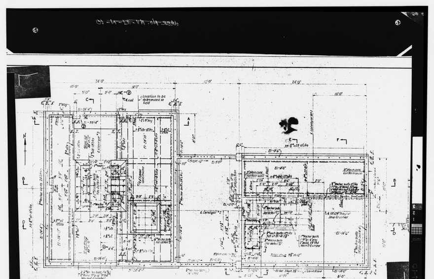
The design process
The Tunnel Test
Florida Fixes
Design files
Earn all four frames in the Lesson, then finish the checklist.
🔜 Coming up nextComing up next: Unit 10 check-in
You finished Unit 10, Florida Ecosystems! Next comes a short unit quiz to show what you know.
Photo and music credits
- Florida Box Turtle (Terrapene carolina bauri) (309076359), aneye4wonder (Ineta McParland), CC BY 2.0
- Cropped lake okeechobee oli 2016184 lrg, NASA Earth Observatory images by Joshua Stevens, using Lands, Public domain
- Kissimmee River canal section, Tony Santana, U.S. Army Corps of Engineers, Public domain
- Starr-130319-2970-Schinus terebinthifolius-habit with Kim removal and mulched…, Forest and Kim Starr, CC BY 3.0 us
- Florida Panther Trail Camera 04 (41662557155), U.S. Fish and Wildlife Service Southeast Region, CC BY 2.0
- Female Florida Panther with Kittens on Florida Panther National Wildlife Refu…, USFWS/Southeast, Public domain
- Int95nRoadNight-Exit29AB-FL838ew (38093462322), formulanone from Huntsville, United States, CC BY-SA 2.0
- Panther Crossing, NPSPhoto, S.Zenner (9099875473), Everglades NPS from Homestead, Florida, United States, Public domain
- Alligator Alley Aerial - Late Sunset (35145769371), formulanone from Huntsville, United States, CC BY-SA 2.0
- Panther underpass, John D. Lloyd, CC BY 2.5
- Everglades Stormwater Treatment Areas, September 20, 2014 (15836177632), USEPA Environmental-Protection-Agency, Public domain
- Kissimmee River Restoration 3, JaxStrong, CC BY 2.0
- Brazilian Pepper (Schinus terebinthifolia) - Sarasota, Florida 2023-01-22, Ryan Hodnett, CC BY-SA 4.0
- Florida Panther - Puma concolor coryi, Fakahatchee Strand Preserve State Park…, Judy Gallagher, CC BY 2.0
- Panther Crossing - Next 6 Miles (30637501583), formulanone from Huntsville, United States, CC BY-SA 2.0
- Photocopy detail of blueprint (original blueprint located at the Nevada State…, unknown, Public domain
- NB US 441; Paynes Prairie Ecopassage Sign (2 Miles), DanTD, CC BY-SA 4.0
- Bear underpass écoducOurs, U.S. Dept. of Transportation, Public domain
- Alligator Alley Aerial (22782020008), formulanone from Huntsville, United States, CC BY-SA 2.0
- Schinus terebinthifolius berries 7th Brigade Park Chermside L1020123, John Robert McPherson, CC BY-SA 4.0
- Concrete pipe culvert taking Lisles Burn under site road - geograph.org.uk - …, Russel Wills, CC BY-SA 2.0
- Kissimmee River Restoration 4, JaxStrong, CC BY 2.0
- Music: Rhapsody in Blue (George Gershwin, 1924 jazz band version, orchestrated by Ferde Grofé), "The President's Own" United States Marine Band with Bramwell Tovey, public domain recording (via Wikimedia Commons).
- Opti the owl: Optima Academy. Sound effects are made by the page. The design movie, the Tunnel Test, and the Florida Fixes map are models; every place photo is real. The pipe in the Tunnel Test is a real culvert in Scotland, used to show what a small crossing looks like.